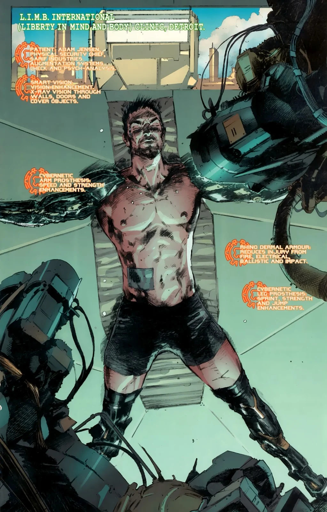

A Web Study on Deus Ex: Human Revolution Deus Ex: Human Revolution immerses players in a morally complex, cyberpunk/futuristic world, exploring transhumanism, corporate power, and the tensions between freedom and control.
Through it's rich narrative, player-driven choices, and thought-provoking themes, the game challenges perceptions of humanity and technology, making the gameplay a deeply impactful experience.
I. Introduction
Deus Ex: Human Revolution is a cyberpunk action-RPG developed by Eidos Montreal and published by Square Enix. Set in the year 2027, the game explores a dystopian near-future where advancements in human augmentation -- cybernetic enhancements that replace or augment human body parts -- have created deep societal divisions.
These augmentations offer incredible physical and mental capabilities but come at the cost of dependence on expensive technology and pharmaceutical drugs. This tension fuels conflicts between corporations, governments, and anti-augmentation factions, creating a world rife with conspiracies and moral dilemmas.
The game follows Adam Jensen, a former SWAT team officer turned security chief for Sarif Industries, who undergoes life-saving augmentation after a brutal attack. As Jensen investigates the forces behind the attack, he uncovers a web of global conspiracies that challenge the boundaries of humanity, ethics, and free will.
II. Gameplay and Stakes
Gameplay Mechanics Deus Ex: Human Revolution allows players to approach challenges through stealth,
combat, hacking, or dialogue choices. Stealth emphasizes cover, silent takedowns, and
cloaking, while combat offers weapons and offensive augmentations. Hacking enables
players to bypass security and uncover hidden details, while dialogue choices shape
the story and relationships, creating a highly flexible experience.
What's at Stake The stakes revolve around Adam Jensen's search for truth and his struggle with identity
after being forcibly augmented. On a larger scale, the game explores the societal
consequences of human augmentation, exposing tensions between corporate power, ethics,
and inequalities in capitalistic economy. Player choices drive the narrative and force
engagement with complex moral questions.
Notice the choice between Stealth and Lethal Force in the video clip above
from the Sarif Industries warehouse infiltration mission.
III. Narrative Arc
Deus Ex: Human Revolution charts Adam Jensen's journey from a security chief at Sarif
Industries to a cybernetically enhanced investigator entangled in a global conspiracy. After a
devastating attack leaves him near death, Jensen undergoes extensive augmentation to save his life.
Not only does it save his life, it also makes him a symbol of the ethical and existential
questions surrounding human enhancement. Key narrative moments include:
The Opening Attack on Sarif Industries: This inciting event introduces
the central conflicts between pro- and anti-augmentation factions, setting the stage
for Jensen's transformation and quest for answers.
Mid-Game Revelations: As Jensen delves deeper into the conspiracy, he uncovers the
involvement of powerful corporations, rogue scientists, and clandestine organizations like
the Illuminati, each with competing visions for the future of humanity.
Moral Dilemmas and Personal Stakes: The narrative explores Jensen's internal struggle
with his augmentations, which grant him extraordinary abilities BUT raise questions about
his autonomy, humanity, and purpose.

In the image above, notice the areas in which Jensen's augmentation has already begun
implementation -- in comparison to his still VERY human-like facial features.
Theoretical Connections Drawing on Barthes' The Reality Effect, the environmental storytelling in
Deus Ex: Human Revolution plays a pivotal role in creating a sense of immersion and narrative depth.
The game's world is meticulously detailed, filled with seemingly unimportant objects and
incidental information: scattered e-books, personal emails, and idle conversations overheard in
passing. These details often feel peripheral to the main storyline, yet they contribute to
an overwhelming sense of immediacy and texture.
For instance, reading an email chain between low-level employees discussing mundane workplace issues
might initially seem irrelevant. However, this detail reinforces the player's sense of the game
world as a living, breathing environment, where the stakes of corporate power and technological
progrress touch even the most insignificant lives. By including these "unmotivated" elements
that don't directly advance the plot, the game mirrors Barthes' assertion that such details create
a "reality effect," drawing the player further into its dystopian setting and subtly shaping
their understanding of its broader stakes.
This approach also complements the game's themes of surveillance and control. The act of
discovering and consuming this incidental information mimics the player's role as an
investigator, blurring the line between player agency and the constructed reality of the game
world. These details don't just add texture but also invite the player to explore deeper
questions about the systems of power and oppression that pervade the game's narrative arc.
IV. The Ending
The climax of Deus Ex: Human Revolution occurs when Adam Jensen confronts the
Illuminati, the secretive organization orchestrating the global chaos surrounding human
augmentation. As Jensen uncovers the truth about the Illuminati's influence over the world's
corporations, he faces a momentous decision regarding the future of humanity: whether to
support the Illuminati's plan to control human augmentation for the "greater good," side with
a faction that wants to free humanity from technological dependence, or embrace a radical
solution that introduces a new order. These decisions carry profound consequences, not only
for Jensen but for the fate of the entire world. The game presents multiple endings, each
shaped by the player's choices throughout the narrative. These endings reflect different
philosophies about human autonomy, control, and the potential dangers of unchecked
technological advancement.
In one ending, Jensen decides to support the Illuminati's vision of a controlled
future, arguing that humanity needs guidance in managing its technological power.
In another, he chooses to destroy the Illuminati's influence, advocating for a
more open, decentralized approach to human augmentation.
A third, more radical choice, involves Jensen taking matters into his own hands,
seeking to reset the world's technological progress entirely, risking chaos in the process.
These choices emphasize the game's central themes of free will and ethical responsibility. Listent to the Hugh Darrow ending to the game in the clip above, particularly focusing on Jensen's
monologue as he reflects on the consequences of his actions and the decision the player
has made. This moment should be highlighted to showcase the weight of the player's choice
and how it shapes the game's ultimate conclusion.
V. Analysis: Sound and Immersion
The sound design in Deus Ex: Human Revolution plays a crucial role in immersing
players within its dystopian world. Michael McCann's haunting and atmospheric soundtrack
blends futuristic synth sounds with emotional undertones, perfectly complementing the game's
cyberpunk aesthetic. The music shifts dynamically based on the player's actions, often
intensifying during combat or moments of danger, while the ambient background sounds provide a
sense of place and atmosphere.
One standout example is the ambient track from Hengsha, a sprawling, neon-lit cityscape in the game.
The track combines industrial and electronic elements with subtle melodies, creating a sense of
claustrophobia and unease that reflects the social and economic inequality present within
the city. The bustling soundscape, filled with the hum of machinery and distant conversations,
contrasts with the game's darker undercurrent, emphasizing the tension between technological
advancement and human suffering.
Sound Design and Anzieu The game's sound design aligns with Didier Anzieu's concept of "The Sound Envelope," which he describes
as the way sound envelops the body and psyche, creating an intimate connection between the
listener and the world. In Deus Ex: Human Revolution, the sound environment does just
that -- it envelops the player, guiding emotional responses and mirroring the protagonist's
psychological state.
For example, during tense moments of investigation or combat, the soundtrack's rising
intensity reflects Adam Jensen's growing sense of urgency and internal conflict. On a
psychological level, the game's soundscape also highlights the alienation and disconnection
Jensen feels as he navigates his augmented body and the morally ambiguous world around him.
The audio not only enhances the atmosphere but deepens the emotional experience, creating a
powerful sense of immersion that mirrors the protagonist's journey through a world increasingly
dominated by technology. This enveloping audio experience is central to Deus Ex: Human
Revolution's ability to keep players emotionally and mentally engaged, reinforcing its
thematic concerns with human augmentation, power, and identity.
VI. Conclusion
Deus Ex: Human Revolution holds a special place in my heart because it was a game my dad
introduced to me. He appreciated its cyberpunk aesthetic and frequently discussed how it
provided thoughtful commentary on technological advancements and human existence within a
society shaped by capitalistic framework. Playing this game not only deepened my appreciation
for the narrative but also sparked meaningful thought processes about the ethical and societal
implications of technology (and its efforts being forwarded by corporations) -- discussions that made
the experience much more personal and impactful.
What captivates me most about Deus Ex: Human Revolution is how it transcends the
typical first-person shooter game. Instead of focusing solely on action, it weaves deeper
philosophical questions into its gameplay, urging players to think critically about various
moral dilemmas, humans v.s. technology/robots, and the balance between freedom and control in
a corporate-driven society. Its emphasis on player choice, immersive world-building, and layered
storytelling makes it both entertaining and thought-provoking, offering a unique blend of escapism
and reflection on humanity's future challenges.
VII. Bibliographic Notes
Deus Ex: Human Revolution by Eidos-Montreal and Square Enix
Anzieu, Didier. "The Sound Envelop" in The Skin Ego. Chris Turner (New Haven:
Yale University Press, 1989).
Barthes, Roland. "The Reality Effect" in The Rustle of Language. Richard Howard
(Berkeley, CA: UC Press, 1984 (1968)).
McCann, Michael. Deus Ex: Human Revolution Original Soundtrack.